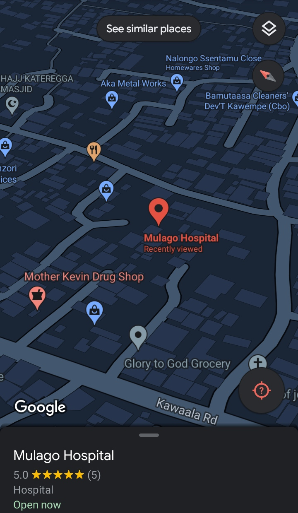

MediSave hepls users to find the closest health centres for their ailment.
It requires a user to create an account.

This will always enable the user to log in into a window having a virtual geographic map.

The user searches and locates the health centers that are nearby according to his/her current location.